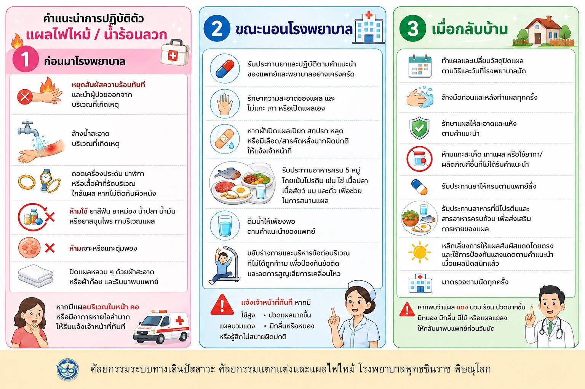

ก่อนมาโรงพยาบาล (ปฐมพยาบาล)
- หยุดสัมผัสความร้อนทันที และนำผู้ป่วยออกจากบริเวณที่เกิดเหตุ
- ล้างด้วยน้ำสะอาดบริเวณที่เกิดเหตุ
- ถอดเครื่องประดับ นาฬิกา หรือเสื้อผ้าที่รัดบริเวณใกล้แผล หากไม่ติดกับผิวหนัง
- ห้ามใช้ ยาสีฟัน ยาหม่อง น้ำปลา น้ำมัน หรือยาสมุนไพร ทาบริเวณแผล
- ห้ามเจาะหรือแกะตุ่มพอง
- ปิดแผลหลวม ๆ ด้วยผ้าสะอาดหรือผ้าก๊อซ และรีบมาพบแพทย์
แผลบริเวณใบหน้า คอ หรือหายใจลำบาก
หากมีแผลบริเวณใบหน้า คอ หรือมีอาการหายใจลำบาก ให้รีบแจ้งเจ้าหน้าที่หรือโทร 1669 ทันที
ขณะนอนโรงพยาบาล
- รับประทานยาและปฏิบัติตามคำแนะนำของแพทย์และพยาบาลอย่างเคร่งครัด
- รักษาความสะอาดของแผล และไม่แกะ เกา หรือเปิดแผลเอง
- หากผ้าปิดแผลเปียก สกปรก หลุด หรือมีเลือด/สารคัดหลั่งมากผิดปกติ ให้แจ้งเจ้าหน้าที่
- รับประทานอาหารครบ 5 หมู่ เน้นโปรตีน เช่น ไข่ เนื้อปลา เนื้อสัตว์ นม และถั่ว เพื่อช่วยในการสมานแผล
- ดื่มน้ำให้เพียงพอตามคำแนะนำของแพทย์
- ขยับร่างกายและบริหารข้อต่อบริเวณที่ไม่ได้ถูกห้าม เพื่อป้องกันข้อติดและลดการสูญเสียการเคลื่อนไหว
แจ้งเจ้าหน้าที่ทันที หากมี
- ไข้สูง
- ปวดแผลมากขึ้น
- แผลบวมแดง
- มีกลิ่นหรือหนอง
- รู้สึกไม่สบายผิดปกติ
เมื่อกลับบ้าน
- ทำแผลและเปลี่ยนวัสดุปิดแผลตามวิธีและวันที่โรงพยาบาลนัด
- ล้างมือก่อนและหลังทำแผลทุกครั้ง
- รักษาแผลให้สะอาดและแห้งตามคำแนะนำ
- ห้ามแกะสะเก็ด เกาแผล หรือใช้ยาทา/ผลิตภัณฑ์อื่นที่ไม่ได้รับคำแนะนำ
- รับประทานยาให้ครบตามแพทย์สั่ง
- รับประทานอาหารที่มีโปรตีนและสารอาหารครบถ้วน เพื่อส่งเสริมการหายของแผล
- หลีกเลี่ยงการให้แผลสัมผัสแดดโดยตรง และใช้การป้องกันแสงแดดตามคำแนะนำเมื่อแผลปิดสนิทแล้ว
- มาตรวจตามนัดทุกครั้ง
กลับมาพบแพทย์ก่อนวันนัด หาก
- แผลแดง บวม ร้อน ปวดมากขึ้น
- มีหนอง มีกลิ่น
- มีไข้
- แผลแย่ลง
อินโฟกราฟิก

วิดีโอ
มีข้อสงสัย ติดต่อ หอผู้ป่วยศัลยกรรมทางเดินปัสสาวะ ตกแต่ง แผลไฟไหม้ โรงพยาบาลพุทธชินราช พิษณุโลก โทร 055-270-300 ต่อ 1846, 18407